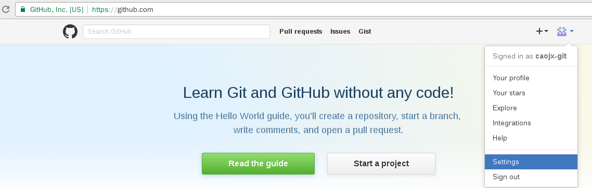
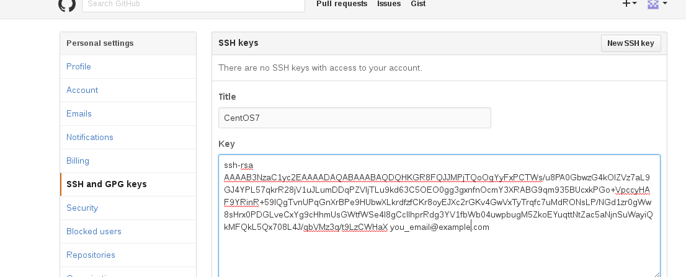

Centos7中安装GitHub
Git是一个开源的分布式版本控制系统，用于敏捷高效地处理任何或小或大的项目。 Git 是 Linus Torvalds 为了帮助管理 Linux 内核开发而开发的一个开放源码的版本控制软件。 Git 与常用的版本控制工具 CVS, Subversion 等不同，它采用了分布式版本库的方式，不必服务器端软件支持。
Git 与 SVN 区别
Git不仅仅是个版本控制系统，它也是个内容管理系统(CMS),工作管理系统等。
如果你是一个具有使用SVN背景的人，你需要做一定的思想转换，来适应GIT提供的一些概念和特征。
Git 与 SVN 区别点：
1、Git是分布式的，SVN不是：这是Git和其它非分布式的版本控制系统，例如SVN，CVS等，最核心的区别。
2、Git把内容按元数据方式存储，而SVN是按文件：所有的资源控制系统都是把文件的元信息隐藏在一个类似.svn,.cvs等的文件夹里。
3、Git分支和SVN的分支不同：分支在SVN中一点不特别，就是版本库中的另外的一个目录。
4、Git没有一个全局的版本号，而SVN有：目前为止这是跟SVN相比GIT缺少的最大的一个特征。
* 5、Git的内容完整性要优于SVN：Git的内容存储使用的是SHA-1哈希算法。这能确保代码内容的完整性，确保在遇到磁盘故障和网络问题时降低对版本库的破坏。
安装git
使用yum方式查看git安装源
sudo yum list git
安装git
sudo yum install -y git.x86_64
提示：如果是Windows系统下载 git for windows安装即可。
生成ssh-key
由于git是ssh传输协议的，我们是git与服务器进行交互之前必须配置好ssh协议，设置如下：
[user@localhost ~]$ ssh-keygen -t rsa -C “you_email@example.com”->这里是你的github登录邮箱
Generating public/private rsa key pair.
Enter file in which to save the key (/home/caojx/.ssh/id_rsa): –》这里输入回车
Enter passphrase (empty for no passphrase): –》输入提交代码的密码（可以为空，建议），输入的时候不会显示
Enter same passphrase again: #再次确认密码（可以为空，建议）
Your identification has been saved in /home/caojx/.ssh/id_rsa.
Your public key has been saved in /home/caojx/.ssh/id_rsa.pub.
The key fingerprint is:
8c:7a:8e:8c:46:fd:3a:fa:84:25:d9:57:fa:1b:5d:ad 389715062@qq.com
The key’s randomart image is:
+–[ RSA 2048]----+
| |
| |
| . |
| o = . |
| o.o + S . . |
| .+.o . . . . |
| .. o.. o . E |
| .+.+. o |
| .oo=o. . |
+-----------------+
运行ssh-add ~/.ssh/id_rsa
[user@localhost ~]$ ssh-add ~/.ssh/id_rsa
Enter passphrase for /home/caojx/.ssh/id_rsa: –》这里输入passphrase(密码)
Identity added: /home/caojx/.ssh/id_rsa (/home/caojx/.ssh/id_rsa)
GitHub的ssh-key设置
查看 ~/.ssh/id_rsa.pub内容，这个内容在后边需要复制到GitHub的ssh-key设置中
[user@localhost ~]$ cat ~/.ssh/id_rsa.pub
ssh-rsa AAAAB3NzaC1yc2EAAAADAQABAAABAQDQHKGR8FQJJMPjTQoOgYyFxPCTWs/u8PA0GbwzG4kOIZVz7aL9GJ4YPL57qkrR28jV1uJLumDDqPZVljTLu9kd63C5OEO0gg3gxnfnOcmY3XRABG9qm935BUcxkPGo+VpccyHAF9YRinR+59lQgTvnUPqGnXrBPe9HUbwXLkrdfzfCKr8oyEJXc2rGKv4GwVxTyTrqfc7uMdRONsLP/NGd1zr0gWw8sHrx0PDGLveCxYg9cHhmUsGWtfWSe4l8gCcIlhprRdg3YV1fbWb04uwpbugM5ZkoEYuqttNtZac5aNjnSuWayiQkMFQkL5Qx708L4J/qbVMz3q/t9LzCWHaX you_email@example.com登录GitHub
右上角->Settings->SSH and GPG keys->New SSH Key->将 cat ~/。ssh/id_rsa.pub的内容复制到Key中->Add Key


测试是否成功
在本机控制台中执行命令
ssh -T git@gitHub.com[user@localhost ~]$ ssh -T git@gitHub.com
The authenticity of host ‘github.com (192.30.253.112)’ can’t be established.
RSA key fingerprint is 16:27:ac:a5:76:28:2d:36:63:1b:56:4d:eb:df:a6:48.
Are you sure you want to continue connecting (yes/no)? yes
Warning: Permanently added ‘github.com,192.30.253.112’ (RSA) to the list of known hosts.
这里会要你输入提交代码的密码，出现上边这个就说明你成功了。
Git 配置
下边的内容来自http://www.runoob.com/git/git-install-setup.html
Git 提供了一个叫做 git config 的工具，专门用来配置或读取相应的工作环境变量。 这些环境变量，决定了 Git 在各个环节的具体工作方式和行为。这些变量可以存放在以下三个不同的地方： /etc/gitconfig 文件：系统中对所有用户都普遍适用的配置。若使用 git config 时用 –system 选项，读写的就是这个文件。 ~/.gitconfig 文件：用户目录下的配置文件只适用于该用户。若使用 git config 时用 –global 选项，读写的就是这个文件。 * 当前项目的 Git 目录中的配置文件（也就是工作目录中的 .git/config 文件）：这里的配置仅仅针对当前项目有效。每一个级别的配置都会覆盖上层的相同配置，所以 .git/config 里的配置会覆盖 /etc/gitconfig 中的同名变量。
在 Windows 系统上，Git 会找寻用户主目录下的 .gitconfig 文件。主目录即 $HOME 变量指定的目录，一般都是 C:\Documents and Settings\$USER。 此外，Git 还会尝试找寻 /etc/gitconfig 文件，只不过看当初 Git 装在什么目录，就以此作为根目录来定位。
用户信息
Git 为你的每一个提交都记录你的名字与电子邮箱地址，所以第一步需要配置用户名和邮箱地址。 配置个人的用户名称和电子邮件地址：
$ git config –global user.name “caojx”
$ git config –global user.email you_email@example.com
如果用了 –global 选项，那么更改的配置文件就是位于你用户主目录下的那个，以后你所有的项目都会默认使用这里配置的用户信息。 如果要在某个特定的项目中使用其他名字或者电邮，只要去掉 –global 选项重新配置即可，新的设定保存在当前项目的 .git/config 文件里。
如下的配置可以不用配置
文本编辑器
设置Git默认使用的文本编辑器, 一般可能会是 Vi 或者 Vim。如果你有其他偏好，比如 Emacs 的话，可以重新设置：:
$ git config –global core.editor emacs
差异分析工具
还有一个比较常用的是，在解决合并冲突时使用哪种差异分析工具。比如要改用 vimdiff 的话：
$ git config –global merge.tool vimdiff
Git 可以理解 kdiff3，tkdiff，meld，xxdiff，emerge，vimdiff，gvimdiff，ecmerge，和 opendiff 等合并工具的输出信息。 当然，你也可以指定使用自己开发的工具。
查看配置信息
要检查已有的配置信息，可以使用 git config –list 命令：
$ git config –list
http.postbuffer=2M
user.name=runoob
user.email=test@runoob.com
有时候会看到重复的变量名，那就说明它们来自不同的配置文件（比如 /etc/gitconfig 和 ~/.gitconfig），不过最终 Git 实际采用的是最后一个。
这些配置我们也可以在 ~/.gitconfig 或 /etc/gitconfig 看到，如下所示：
vim ~/.gitconfig
显示内容如下所示：
[http]
postBuffer = 2M
[user]
name = caojx
email = your_email@example.com
也可以直接查阅某个环境变量的设定，只要把特定的名字跟在后面即可，像这样：
$ git config user.name
runoob
参考文章：
http://blog.csdn.net/superman_xxx/article/details/51691505
http://jingyan.baidu.com/article/fec4bce2285b56f2618d8bdc.html
http://www.cnblogs.com/fnng/archive/2011/08/25/2153807.html
http://www.ruanyifeng.com/blog/2014/06/git_remote.html